<main id="fondo" class="container-fluid min-vh-100">
    <div class="row">
        <!--**************************************MENU***************************************-->
        <div id="menu" class="col-12 col-lg-2 pr-0 bg-light border-right">
            <app-menu></app-menu>
        </div>
        <!--***********************************CONTENIDO***************************************-->
        <div id="contenido" class="col-12 col-lg-10 overflow-hidden mt-4">
            <!--Enlace botones-->
            <!--
            <div class="mb-3">
                <button type="button" routerLink="/docMaria" class="btn btn-primary mx-1">María</button>
                <button type="button" routerLink="/docDaniel" class="btn btn-primary mx-1">Daniel</button>
                <button type="button" routerLink="/docLuis" class="btn btn-primary mx-1">Luis</button>
            </div>
            -->
            <!--*****NAV*****-->
            <nav>
                <div class="nav nav-tabs border-bottom" id="nav-tab" role="tablist">
                    <a id="apart1-tab" (click)="activar(1)" class="nav-item nav-link active bg-white border2"
                        data-toggle="tab" href="#apart-1" role="tab" aria-controls="apart1-tab"
                        aria-selected="true">Inicialización
                    </a>
                    <a id="apart2-tab" (click)="activar(2)" class="nav-item nav-link" data-toggle="tab" href="#apart-2"
                        role="tab" aria-controls="apart2-tab" aria-selected="false">Admin cuentas
                    </a>
                    <a id="apart3-tab" (click)="activar(3)" class="nav-item nav-link" data-toggle="tab" href="#apart-3"
                        role="tab" aria-controls="apart3-tab" aria-selected="false">Tutores
                    </a>
                    <a id="apart4-tab" (click)="activar(4)" class="nav-item nav-link" data-toggle="tab" href="#apart-4"
                        role="tab" aria-controls="apart4-tab" aria-selected="false">Empresas
                    </a>
                    <a id="apart5-tab" (click)="activar(5)" class="nav-item nav-link" data-toggle="tab" href="#apart-5"
                        role="tab" aria-controls="apart5-tab" aria-selected="false">Cursos
                    </a>
                    <a id="apart6-tab" (click)="activar(6)" class="nav-item nav-link" data-toggle="tab" href="#apart-6"
                        role="tab" aria-controls="apart6-tab" aria-selected="false">Alumnos
                    </a>
                    <a id="apart7-tab" (click)="activar(7)" class="nav-item nav-link" data-toggle="tab" href="#apart-7"
                        role="tab" aria-controls="apart7-tab" aria-selected="false">Otros
                    </a>
                </div>
            </nav>
            <!--*****CONTENIDO NAV*****-->
            <div class="tab-content text-white2" id="nav-tabContent">
                <!--1: Inserción datos-->
                <div class="tab-pane fade show active" id="apart-1" role="tabpanel" aria-labelledby="apart1-tab">
                    <h1 class="mt-2">¡Bienvenido/a!</h1>
                    <p>
                        Para poder empezar a utlizar la aplicación, primeramente deberás introducir los datos de los
                        profesores y alumnos. Para ello, accede al apartado "Admin" del menú y sube los correspondientes
                        archivos CSV en su apartado:
                    </p>
                    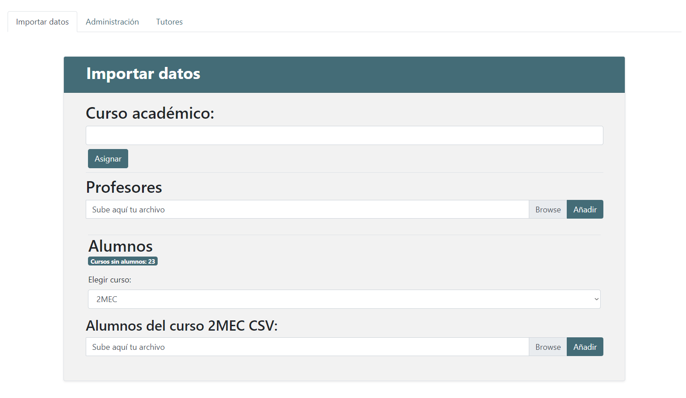
                    <p class="pr-2">
                        En la sección "Profesores" sube el csv de los profesores y en la sección "Alumnos" debes
                        seleccionar el curso y posteriormente subir los csv de los alumnos correspondientes al
                        curso seleccionado.
                    </p>
                    <p class="pr-3">
                        Cuando ya estén todos los archivos insertados podrás comunicar que la aplicación está lista para
                        que los usuarios puedan comenzar a registrarse. Cuando se registren su perfil se autocompletará
                        con sus datos correspodientes. Por eso es importante que los archivos csv estén insertados antes
                        de que se registren los usuarios en la aplicación.
                    </p>
                    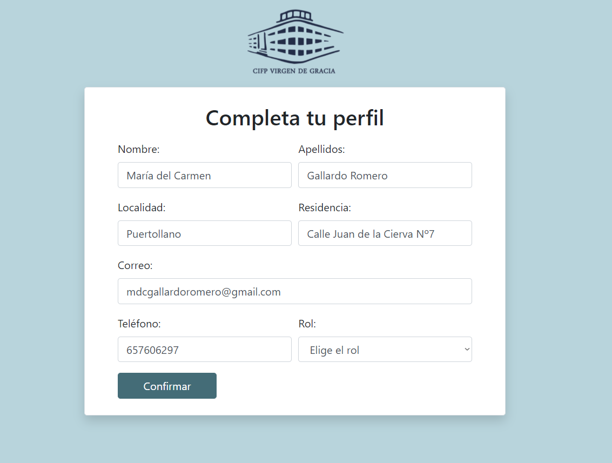
                </div>
                <!--2: Administración cuentas-->
                <div class="tab-pane fade" id="apart-2" role="tabpanel" aria-labelledby="apart2-tab">
                    <p class="mt-2">
                        Para que los usuarios puedan acceder a la aplicación su cuenta debe ser activada anteriormente
                        por motivos de seguridad, por ello tu labor como director/a es la administración de las cuentas.
                        Desde la sección "Admin" del menú y accediendo a "Administración":
                    </p>
                    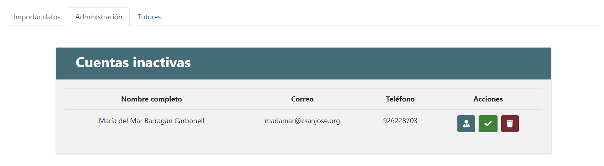
                    <p class="pr-2">
                        Desde aquí llevarás a cabo la administración total de las cuentas tanto activarlas, cambiar el
                        rol
                        en caso de equivocación al registrarse o eliminar las cuentas.
                        Tienes a tu disposición información relevante de la persona registrada por si necesitas
                        contactar
                        con ella en caso de suplantación de identidad u otros.
                    </p>
                    <p>
                        Como puedes ver en la imágen hay 3 botones que corresponden a las acciones de cambiar rol,
                        activar
                        cuenta y eliminarla.
                    </p>
                    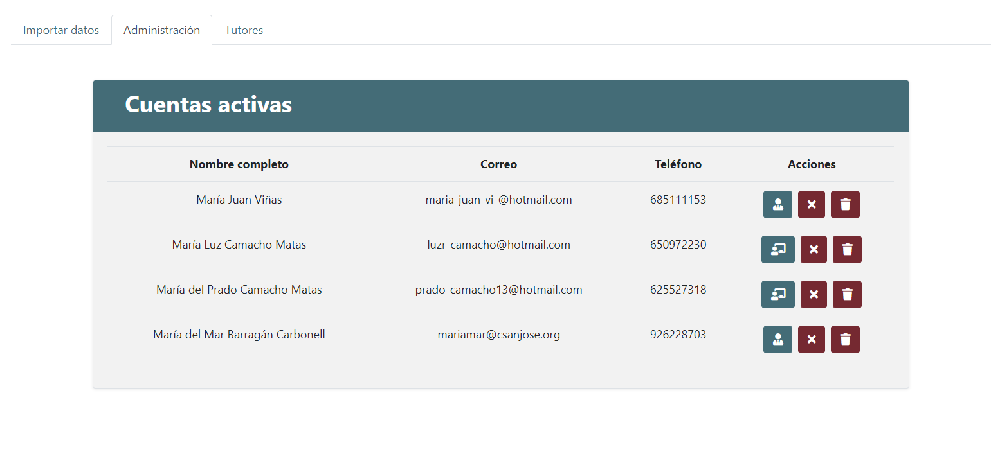
                    <p>
                        Desde este mismo apartado se administran también aquellas cuentas que ya han sido activadas.
                        Donde puedes cambiar el rol (Jefe de estudios o tutor), desactivar la cuenta (no podrá iniciar
                        sesión) o borrar la cuenta permanentemente.
                    </p>
                </div>
                <!--3: Asignación tutores de cada curso-->
                <div class="tab-pane fade" id="apart-3" role="tabpanel" aria-labelledby="apart3-tab">
                    <p class="mt-2">
                        Una vez los tutores se hayan registrado, deberás asignarles su curso correspondiente.
                        Desde la sección "Admin" del menú y accediendo a "Tutores":
                    </p>
                    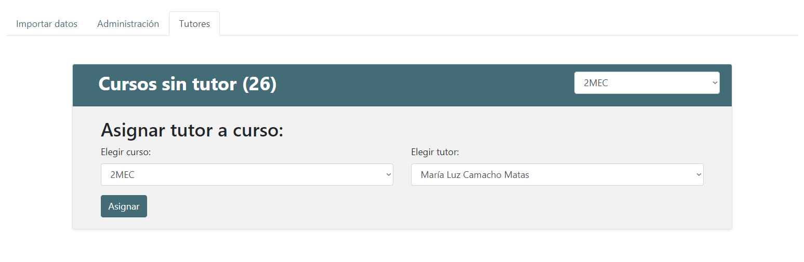
                    <p class="pr-2">
                        Seleccionarás el curso y el tutor y al seleccionar botón "Asignar" se asignará el tutor
                        seleccionado al curso seleccionado.
                    </p>
                    <p>
                        En el select que hay situado en la cabecera se encuentran los cursos que todavía no tienen
                        asignados tutores, si seleccionas un curso desde este select se verá seleccionado en el select
                        para asignarlo directamente.
                    </p>
                    <p>
                        Una vez asignados los cursos, los tutores cuando accedan a sus cuentas podrán acceder a la
                        información
                        correspondiente a su curso.
                    </p>
                </div>
                <!--4: Empresas -->
                <div class="tab-pane fade" id="apart-4" role="tabpanel" aria-labelledby="apart4-tab">
                    <p class="mt-2">
                        La aplicación carga las empresas que tienen convenios actualmente con el centro. Desde el
                        apartado
                        del menú "Empresas" puedes encontrar todas estas empresas y descargar el anexo 0 correspondiente
                        a cada una.
                    </p>
                    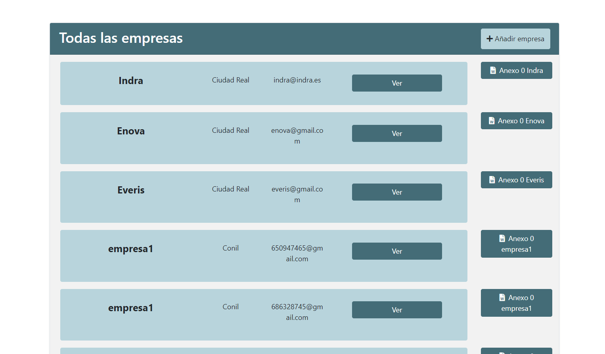
                    <p class="mt-3">
                        También puedes editar la información de la empresa así como sus representantes y responsables
                        desde el botón "Ver" o añadir una nueva empresa desde el botón "Añadir empresa".
                    </p>
                    <p>
                        Desde el apartado "Ver" puedes visualizar toda la información de la empresa.
                        Pulsando en el botón "Editar" se activarán los campos para que puedan ser editados
                        y así modificar la información necesaria. También puedes eliminar la empresa desde
                        el botón "Eliminar".
                    </p>
                    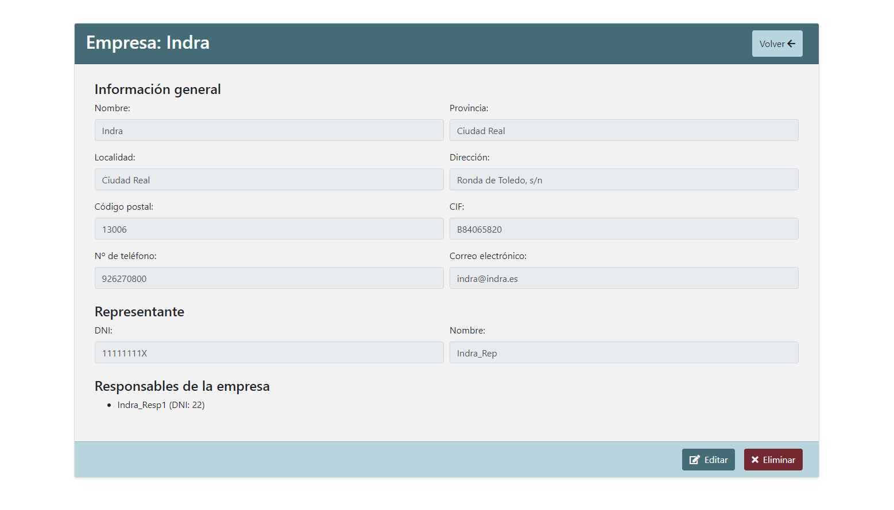
                </div>
                <!--5: Cursos -->
                <div class="tab-pane fade" id="apart-5" role="tabpanel" aria-labelledby="apart5-tab">
                    <p class="mt-2">
                        Desde el apartado "Cursos" se llevará a cabo toda la gestión para generar el papeleo
                        necesario para la fct.

                    </p>
                    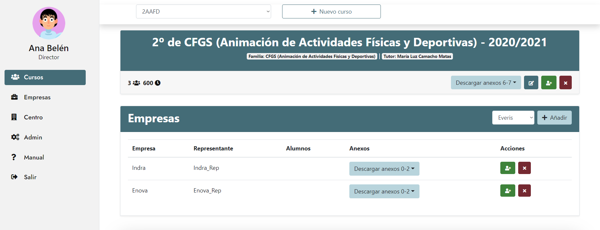
                    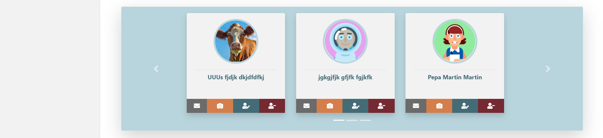
                    <p>
                        Desde el select situado en la cabecera de la página podrás cambiar el curso y accederás
                        a la información del curso seleccionado. También podrás añadir un nuevo curso.
                    </p>
                    <p>
                        Puedes editar la información del curso, añadir nuevos alumnos, eliminar el curso y descargar
                        el excel correspondiente a los gastos de transporte desde la tanda de botones situados en el
                        bloque de información del curso.
                    </p>
                    <p>
                        En el bloque de empresas se deberán añadir las empresas a las que van los alumnos del curso
                        seleccionado. Desde el desplegable de las empresas se selecciona la empresa y se pulsa en el
                        botón "Añadir" para asignar la empresa a ese curso. Una vez realizada la aserción la empresa se
                        añadirá a la tabla donde podrás asignar los alumnos a la empresa donde realizan las prácticas.
                        Además de la descarga del Anexo 0 y Anexo 1. Para poder descargar el anexo 2 deberás tener los
                        alumnos asignados a la empresa.
                        También puedes eliminar las empresas, esta acción desasignará la empresa del curso.
                    </p>
                    <p>
                        En el bloque de anexos se podrán descargar todos los anexos correspondientes al curso.
                        Por ejemplo, si el curso tiene asignado 2 empresas para prácticas, al seleccionar el anexo 0,
                        se descargarán ambos documentos.
                    </p>
                    <p>
                        En el último bloque se encuentran los alumnos del curso, donde podemos editar datos personales,
                        eliminar, enviar un correo, o cambiar las fotos de perfil de los alumnos.
                    </p>
                </div>
                <!--6: Alumnos -->
                <div class="tab-pane fade" id="apart-6" role="tabpanel" aria-labelledby="apart6-tab">
                    <p class="mt-2">
                        Para asignar los alumnos a las prácticas de una empresa como hemos visto en la sección anterior
                        pulsaremos en el botón para añadir alumnos a una empresa y se nos abrirá esta ventana:
                    </p>
                    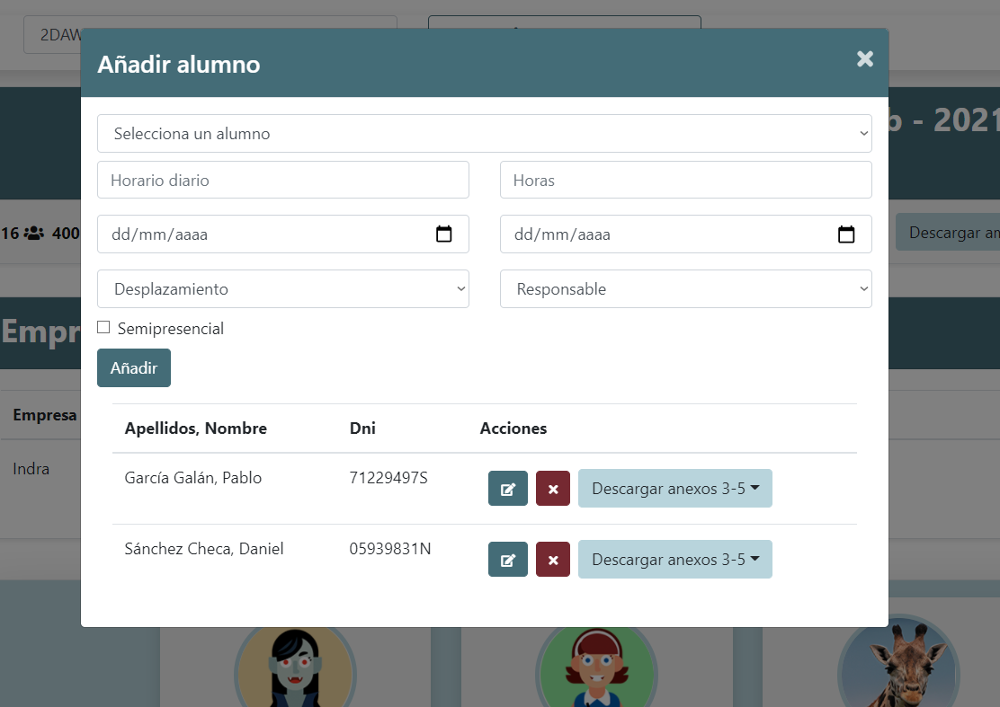
                    <p class="pr-2">
                        Donde deberás seleccionar al alumno y rellenar los datos correspondientes, una vez
                        rellenados pulsaremos en "Añadir", el alumno será añadido a las prácticas de esa empresa
                        y se podrán descargar los anexos 3,4,5 y 7 en caso de que el alumno haya sido marcado con
                        opción desplazamiento. Una vez asignados los alumnos podrás descargar el anexo 2 que corresponde
                        a la relación de alumnos.
                    </p>
                    <p>
                        También podremos editar esta información y desasignar el alumno de las prácticas
                        de la empresa.
                    </p>
                </div>
                <!--7: Otros -->
                <div class="tab-pane fade" id="apart-7" role="tabpanel" aria-labelledby="apart7-tab">
                    <p class="mt-2">
                        Puedes acceder a la información del centro desde el apartado del menú "Centro", esta
                        información sólo podrá ser modificada por el director del centro.
                    </p>
                    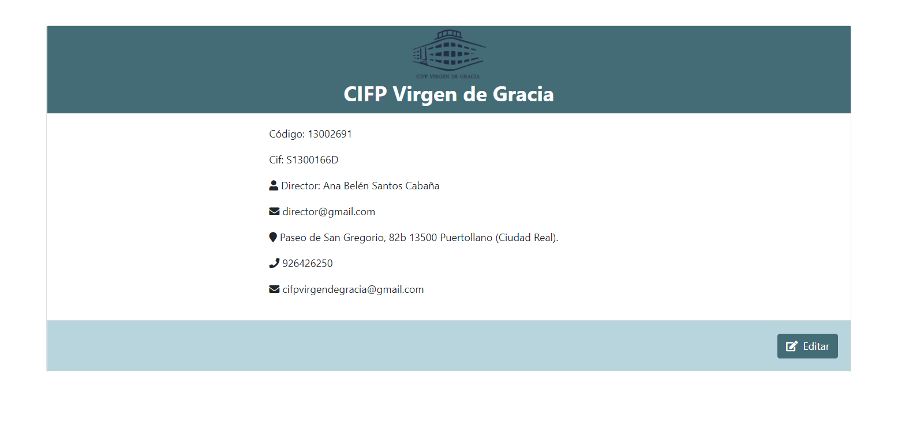
                    <p class="mt-2">
                        Además puedes modificar tu información personal desde la foto de perfil del menú, así como los
                        datos de inicio de sesión (email y contraseña).
                    </p>
                    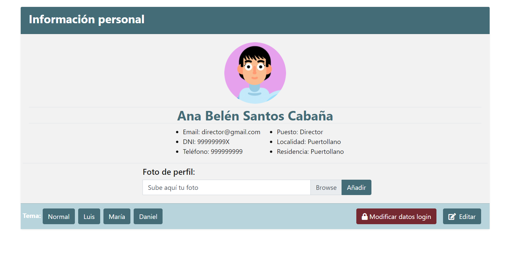

                </div>
            </div>
        </div>
    </div>
</main>